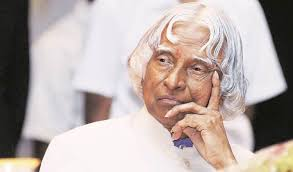
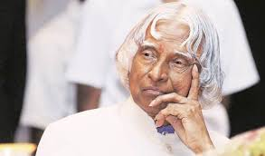
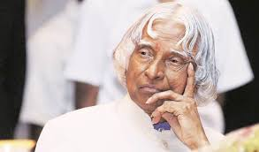

- The Missile Man of India!

Avul Pakir Jainulabdeen Abdul Kalam 15 October 1931 – 27 July 2015) was an Indian aerospace scientist and politician who served as the 11th President of India from 2002 to 2007. He was born and raised in Rameswaram, Tamil Nadu and studied physics and aerospace engineering. He thus came to be known as the Missile Man of India for his work on the development of ballistic missile and launch vehicle technology.
Awards
Career
Source of Inspiration
Dreaming is the first step towards achieving a goal.
It’s very important for you to believe that you are the one.
Beauty isn’t dependent on our external appearance. It radiates from within.
Difficulties are part of life. They are there to prepare you, increase you, and develop you.